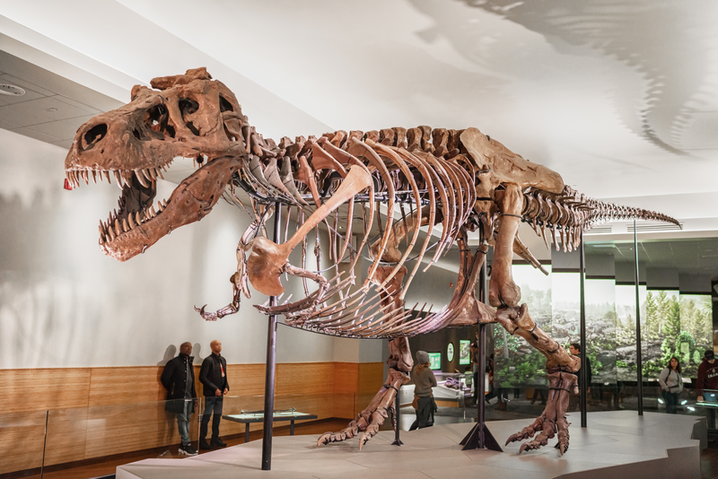

Tyrannosaurus is a genus of large theropod dinosaur. The species Tyrannosaurus rex (rex meaning "king" in Latin), often called T. rex or colloquially T-Rex, is one of the best represented theropods. Tyrannosaurus lived throughout what is now western North America, on what was then an island continent known as Laramidia.
Beginning in the 1960s, there was renewed interest in Tyrannosaurus, resulting in the recovery of 42 skeletons (5–80% complete by bone count) from Western North America. In 1967, Dr. William MacMannis located and recovered the skeleton named "MOR 008", which is 15% complete by bone count and has a reconstructed skull displayed at the Museum of the Rockies.
